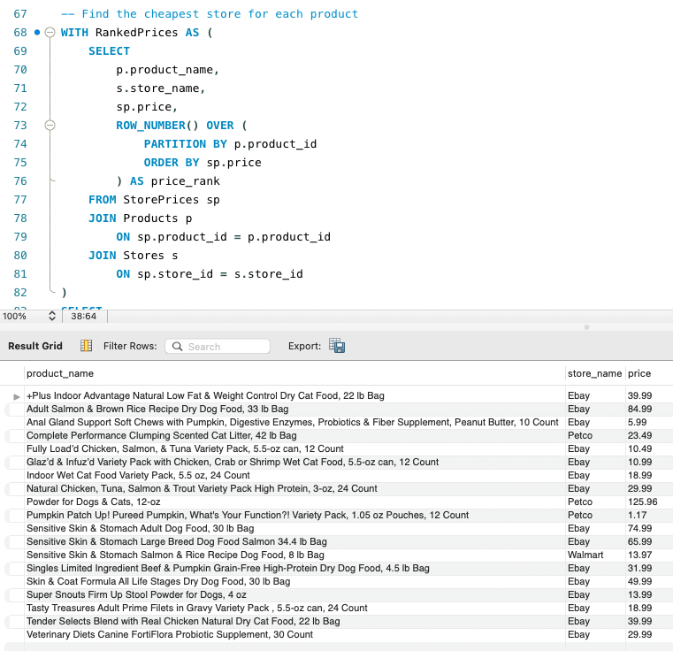

SQL · MySQL · Database Design
A normalized relational database built to compare pet product prices, delivery estimates, and availability across nine retailers.
The Problem
I regularly shop for pet products across multiple retailers — Walmart, Petco, Chewy, Amazon, and others — and price, delivery time, and availability all vary between them. Keeping track of the best option for each product by hand didn't scale, and it also seemed like a strong opportunity to build something real with SQL rather than working from a generic tutorial dataset.
I wanted a project that would do two things at once: actually help me make more informed purchasing decisions, and demonstrate practical database design and query-writing skills to employers.
How It Was Solved
I designed a normalized schema in MySQL Workbench, populated it with realistic product and pricing data, and then wrote a progression of queries to answer real purchasing questions.
01
Holds each retailer's name and website — the source of the pricing being compared.
02
Product name, brand, manufacturer, category, and food type (wet/dry), independent of any one store.
03
The linking table — price, date checked, and estimated delivery days for each product at each store, tied together with foreign keys back to Stores and Products.
Query Examples
Filtering, sorting, and searching — the everyday shape of "what do I have and how do I find it."
SELECT *
FROM Products
WHERE category = 'Cat Food'
AND food_type = 'Wet';Joining all three tables together, then aggregating to see patterns across stores.
SELECT
s.store_name,
ROUND(AVG(sp.estimated_delivery_days), 1) AS average_delivery_days
FROM StorePrices sp
JOIN Stores s
ON sp.store_id = s.store_id
GROUP BY s.store_name
HAVING AVG(sp.estimated_delivery_days) <= 2;A CTE with ROW_NUMBER() to find the single cheapest store for every product in one pass:
WITH RankedPrices AS (
SELECT
p.product_name,
s.store_name,
sp.price,
ROW_NUMBER() OVER (
PARTITION BY p.product_id
ORDER BY sp.price
) AS price_rank
FROM StorePrices sp
JOIN Products p ON sp.product_id = p.product_id
JOIN Stores s ON sp.store_id = s.store_id
)
SELECT product_name, store_name, price
FROM RankedPrices
WHERE price_rank = 1
ORDER BY product_name;
Sample Questions Answered
Project Files
| File | Description |
|---|---|
| Create_Database.sql | Creates the database |
| Create_Tables.sql | Creates the Stores, Products, and StorePrices tables |
| Insert_Stores.sql | Inserts retailer data |
| Insert_Products.sql | Inserts product data |
| Insert_StorePrices.sql | Inserts pricing and delivery data |
| Basic_Queries.sql | SELECT, WHERE, ORDER BY, LIMIT |
| Intermediate_Queries.sql | Joins, aggregates, GROUP BY, HAVING |
| Advanced_Queries.sql | Subqueries, CASE, CTEs, window functions, views |
What I Learned
Designing the schema first forced me to think about normalization before a single row of data went in — deciding what belonged in Products versus StorePrices, and why pricing needed its own linking table rather than living on the product itself. Writing the query set in stages, from basic filtering up through window functions and CTEs, also made it clear how much easier complex reporting becomes once the underlying joins and relationships are solid. It's the same instinct I bring to QA work: get the structure right before you start testing against it.